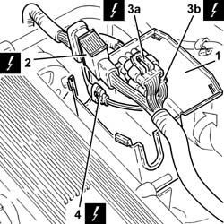
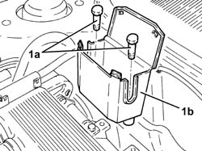
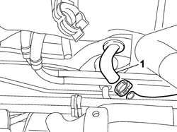
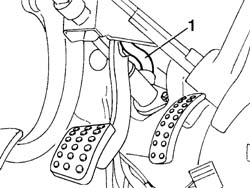

1820B15 hose from rigid intermediate pipe to master cylinder (pump) - r r with pedal unit removed for right hand drive versions
- Path
- Procedures > 18 CLUTCH > 1820 CLUTCH RELEASE CONTROLS > 1820B HYDRAULIC CLUTCH SYSTEM > 1820B15 hose from rigid intermediate pipe to master cylinder (pump) - r r with pedal unit removed for right hand drive versions
- Kind
- repair procedure (removal / refitting; the operation number is the code)
- Applies to
- engines: 3.2 V6; all production periods
- Interactive page
- https://sloeber94.github.io/elrnDB-a156/en/#/3237911
Applies to: engines: 3.2 V6; all production periods
 Removing
Removing
 Refitting
RefittingEnsure that the ignition key is in the OFF position, then disconnect the negative battery terminal (-).
 | Name | Connector |
|---|---|---|
- | Battery |
1008C10 power unit upper reaction link r r
1. Open the electrical connections box cover.
2. Disconnect the engine coupling.
3. Disconnect the electrical connections (3a) and (3b) for the rear Lambda sensors and the catalytic converter.
| Name | Connector |
|---|---|---|
3a | Lambda sensor on catalyzer |
| Name | Connector |
|---|---|---|
3b | Lambda sensor on catalyzer -2 |
4. Disconnect the electrical connection for the detonation sensor, timing side.
| Name | Connector |
|---|---|---|
4 | Detonation sensor - 1 |

Applies to: engines: 3.2 V6; all production periods
1. Undo the bolts (1a) and remove the connections box (1b).

Applies to: engines: 3.2 V6; all production periods
Drain the brake-clutch fluid from the reservoir using a suitable syringe.
1. Disconnect the hose from master cylinder to rigid intermediate pipe, rigid pipe side.

Applies to: engines: 3.2 V6; all production periods
1. Disconnect the fluid intake hose from the reservoir from the master cylinder.
Prise up the gasket from the bulkhead betwen engine bay and passenger compartment and remove the hose.

Applies to: engines: 3.2 V6; all production periods
Refitting
RemovingPosition the hose by passing through the hose on the engine bay bulkhead.
Position the gasket in its seat on the bulkhead between engine bay and passenger compartment.
Connect the pipe to the master cylinder.
Connect the hose to the rigid intermediate pipe from master cylinder to reservoir; Secure the pipe using a collar.
Position the connector box and secure with bolts.
Connect the electrical connection for the detonation sensor, timing side.
| Name | Connector |
|---|---|---|
- | Detonation sensor - 1 |
Connect the electrical connections for the rear Lambda sensors to the catalytic converter.
| Name | Connector |
|---|---|---|
- | Lambda sensor on catalyzer |
| Name | Connector |
|---|---|---|
- | Lambda sensor on catalyzer -2 |
Connect the engine junction.
Close the connection box cover.
1008C10 power unit upper reaction link r r
- 0010T64 brake and or clutch fluid check level and top up as necessary
0010T65 hydraulic brake system bleed air
0010T67 hydraulic clutch system bleed air
Connect the negative (-) battery terminal.